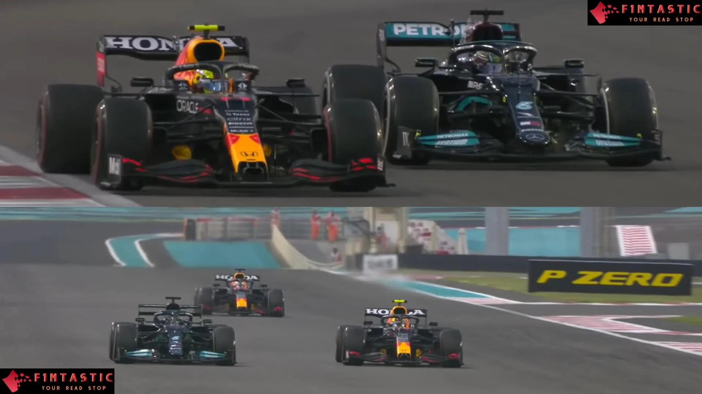
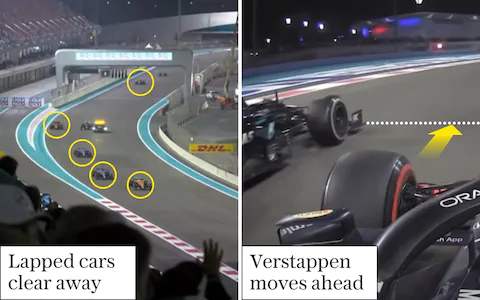

Let’s talk about the 2021 Formula 1 season because it was a special one. The whole season we got to watch one of the best rivalry in recent years of Formula 1. It was Hamilton vs Verstappen. Hamilton was looking to get his 7th world title while Verstappen wanted his 1st.
The start of the season we got to see a feisty but fair battle between both of them. It was not until the middle of the season where we got to see the intensity of the rivalry.
It was the start of the race, Verstappen on pole position, Hamilton in second. Silverstone is Hamilton’s home race. The race starts with intensity, Hamilton trying hard to overtake Verstappen but Verstappen was having none of it. Going through the second sector, they went into copse corner where we got to witness the start of an intense rivalry. Hamilton and Verstappen collided which sent Verstappen into the wall. Hamilton won the race and Verstappen was not happy with the crash. Here we got to see the gloves are off.
Verstappen was ahead in championship. Neither Hamilton nor Verstappen would back off from each other. These two were far ahead of the rest of the field where Verstappen and Hamilton have won 7 races and 4 races respectively thus far. We could see this meant business.
The race started abnormally, Daniel Ricciardo from Mclaren who’s not the championship contender lead the race while Verstappen was behind in second. During the pitstop, Red Bull had screwed up Verstappen’s pitstop which dropped him in 5th. The next lap, Hamilton went into the pit. It was also quite a slow stop. He came out of the pits and to everyone’s surprise, Verstappen was beside him. Going into turn 1, they…both collided. Verstappen’s car was on top of Hamilton’s! This was the end of the race for both of them.
Hamilton needed to win to equalise with Verstappen in championship points. This was also the penultimate round of the season. Hamilton started the race on pole, Bottas in second, Verstappen in third. The race was not a clean one.
After a lot of delays due to the red flags with drivers crashing, we saw Hamilton in second and Verstappen leading. Hamilton catching up and suddenly they collided. Hamilton had some damage but it didn’t stop him from winning the race. Now both of them are equalised in points with one race to go. Abu Dhabi.
This is it. Winner takes all. Hamilton looked fast on this track. Verstappen on pole, Hamilton second. Hamilton overtook Verstappen in lap 1 and built a gap. After the pitstop phase, Hamilton looked like he was comfortably going to win. The gap between both of them was around 20 seconds with Hamilton in front.

However, The person who was in lead hasn’t pitted yet and he was Verstappen’s teammate, Sergio Perez. Perez played the team game and held Hamilton back to close the gap between Hamilton and Verstappen. After 2 laps, the gap went down from 30 seconds to 7 seconds. Hamilton overtook Perez and Verstappen was right behind.
Then, Hamilton quickly built a gap yet again and it looked like it was over for Verstappen. "We need a help from the racing god" said the Red Bull Team Principal, Christian Horner. 7 laps to go, the gap was huge. No way Verstappen can catch up now.
Suddenly, there was a crash at the final sector of the track. It was Nicholas Latifi from Williams. Safety car was out. The gap Hamilton built suddenly was gone. However, can the track clear up before the race runs out of laps?
2 laps to go, the racetrack was clear. Though, there was no way the race could restart before the lapped cars overtook the leading cars and time was running out. Michael Masi, the race director, made a controversial decision by only letting the lapped cars in between Hamilton and Verstappen through instead of the whole lapped cars behind the leader. “We went car racing” said Masi. 1 lap to go, Hamilton versus Verstappen. What happens next is the most exciting moment in recent Formula 1 history: